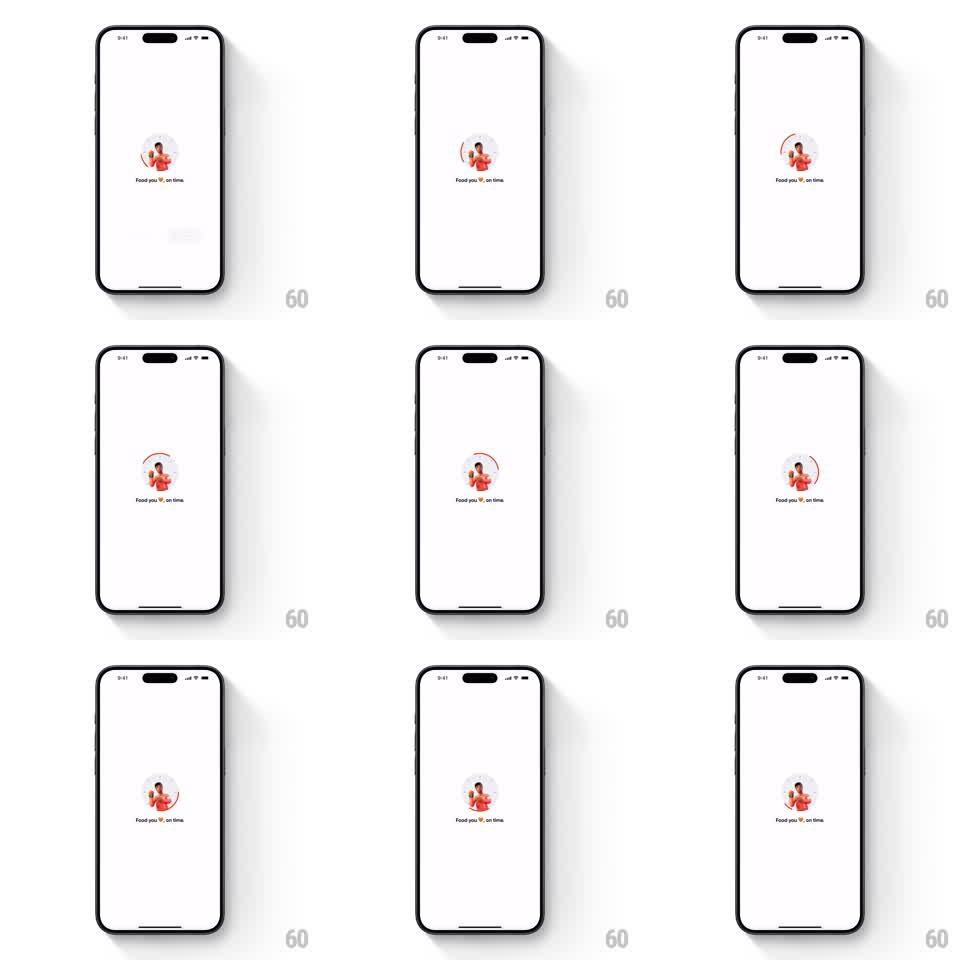

Media
Frame-by-frame

Rebuild this animation 1:1: Swiggy's order loader - a circular progress ring sweeps around the delivery-partner mascot while the heart in the tagline pulses.

Rebuild this animation 1:1: Swiggy's order loader - a circular progress ring sweeps around the delivery-partner mascot while the heart in the tagline pulses. ## Integration Integration: stack-agnostic spec - springs given as stiffness/damping, timed motions as duration + curve; map every value to your framework and animation library of choice. ## Scene White screen: a circular badge at center holding the Swiggy delivery-partner illustration, a progress ring sweeping around the badge's edge, and the tagline "Food you love, on time" below with a small heart in the text. ## Motion spec Pattern: circular progress sweep, ~2s loop. - The ring sweeps clockwise around the badge (300deg of arc over 1.8s, ease-in-out), its leading edge rounded, then resets with a quick fade (200ms) and restarts. - The mascot illustration inside the badge has a subtle idle bob (+-3px, 2s) and stays inside the ring's bounds. - The heart in the tagline pulses (scale 1 to 1.25 and back, 800ms loop, ease-in-out). - Everything else is static. ## Calibration - The ring is thin and brand-orange; a thick ring reads as a pie chart. - The heart pulse and ring sweep run on independent cycles. ## Reduced motion Static ring at 75%; no heart pulse. ## Don't miss - The ring reset is a fade, not a backwards sweep - it only travels clockwise. - The tagline heart is inline with the text, replacing the word "love" glyph's accent.